On March 24, Honda will release the 2010 Insight, the automaker's most advanced gasoline-electric hybrid car yet.
The name may sound familiar: The 2000 Insight was North America’s first hybrid (see photo in the Image Gallery). That two-seater was famous for its gas mileage (50 to nearly 70 mpg), but infamous for its sluggish performance. After a few years of hiatus, the Insight is back, as a practical car for the masses.
The new Insight has room for four (or five if you want to be really snug), solid get-up, a significantly more efficient hybrid drivetrain, and informative real-time mpg feedback. The latter makes it easy to achieve good mpg - even better than the early estimates (40 to 43 mpg) of the Insight’s official fuel economy numbers.
Driving the Insight in a variety of terrains and at different speeds, my best runs were 53, 61 and 64 mpg. And the latter was only good enough for seventh best among many media professionals at a press event. Numerous journalists who have driven the hybrid have reported significantly better results than 40 mpg.
The price tag for the new Insight hybrid is $19,800 for the LX trim level. The new Insight was originally scheduled for release on Earth Day 2009 (April 22), but Honda moved that up to late March given the enthusiastic interest in the car.
To see more of the Insight, check out the video in the Related Content box and the photos in the Image Gallery. Also watch the video tour of the Insight's hybrid system.
|
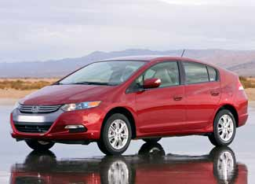 HONDA USA The 2010 Insight will give the Toyota Prius a run for its money as the best hybrid car on the market. |
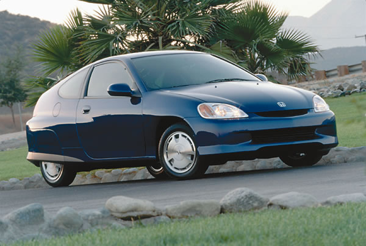 HONDA USA The original Insight (2000-2006 model years) was a teardrop-shaped two-seater. It was a landmark achievement in gas mileage (nearly 70 mpg) and ushered in the hybrid era of green cars. |
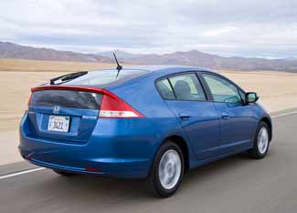 HONDA USA 2010 Honda Insight |
|
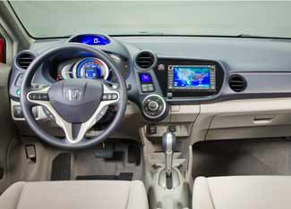 HONDA USA The snug but cozy interior of the 2010 Honda Insight. |
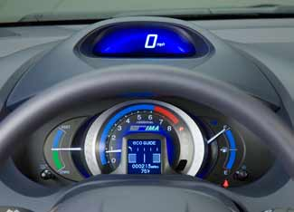 HONDA USA The Insight's real-time mpg feedback screens make it easy to drive with fuel economy in mind, without distracting you from the road. |
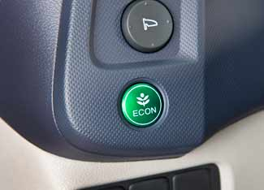 HONDA USA The Econ button will help regulate the Insight's air conditioning and gasoline-electric hybrid system for maximum gas mileage. |
|
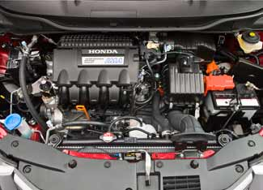 HONDA USA Under the hood of the 2010 Honda Insight. This is Honda's most advanced gasoline-electric hybrid system yet. |
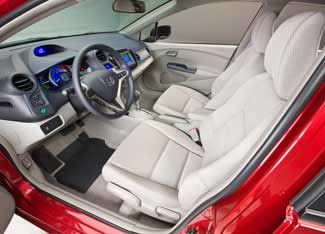 HONDA USA Let's take a ride! |
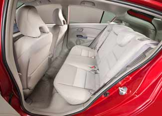 HONDA USA The back seats of the 2010 Honda Insight. |
|
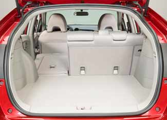 HONDA USA Honda says the Insight's trunk has more cargo room than the Toyota Prius. |
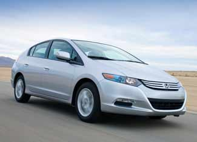 HONDA USA 2010 Honda Insight |
|